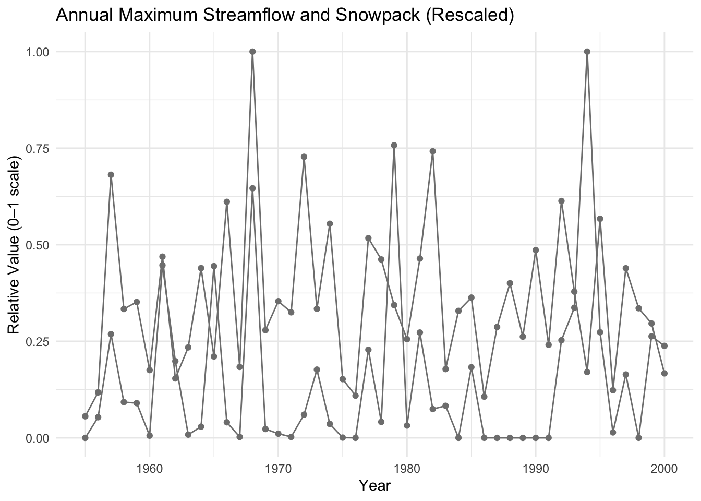

library(here)here() starts at /Users/georgiagoldsmith/Library/CloudStorage/GoogleDrive-georgiagoldsmith@ucsb.edu/My Drive/Bren/Spring 2026/ESM 262/hw 1/hw1library(tidyverse)── Attaching core tidyverse packages ──────────────────────── tidyverse 2.0.0 ──
✔ dplyr 1.1.4 ✔ readr 2.1.5
✔ forcats 1.0.0 ✔ stringr 1.5.2
✔ ggplot2 4.0.0 ✔ tibble 3.3.0
✔ lubridate 1.9.4 ✔ tidyr 1.3.1
✔ purrr 1.1.0 ── Conflicts ────────────────────────────────────────── tidyverse_conflicts() ──
✖ dplyr::filter() masks stats::filter()
✖ dplyr::lag() masks stats::lag()
ℹ Use the conflicted package (<http://conflicted.r-lib.org/>) to force all conflicts to become errorslibrary(janitor)
Attaching package: 'janitor'
The following objects are masked from 'package:stats':
chisq.test, fisher.testlibrary(ggplot2)
library(lubridate)
p301 <- read_csv(here("data", "p301.csv"))Rows: 16345 Columns: 16
── Column specification ────────────────────────────────────────────────────────
Delimiter: ","
dbl (16): tmax, tmin, streamflow, snowpack, precip, direct_solar, diffuse_so...
ℹ Use `spec()` to retrieve the full column specification for this data.
ℹ Specify the column types or set `show_col_types = FALSE` to quiet this message.stream_snowpack <- p301 |>
select("snowpack", "streamflow", "year")
year_avg <- stream_snowpack |>
group_by(year) |>
summarise(max_streamflow = max(streamflow,
na.rm = TRUE),
max_snowpack = max(snowpack, na.rm = TRUE))
year_avg# A tibble: 46 × 3
year max_streamflow max_snowpack
<dbl> <dbl> <dbl>
1 1955 0 0.0609
2 1956 0.00982 0.128
3 1957 0.0494 0.743
4 1958 0.0170 0.364
5 1959 0.0165 0.383
6 1960 0.00104 0.191
7 1961 0.0822 0.512
8 1962 0.0365 0.168
9 1963 0.00153 0.255
10 1964 0.00534 0.479
# ℹ 36 more rowsyear_avg_indexed <- year_avg |>
mutate(
streamflow_scaled = max_streamflow / max(max_streamflow, na.rm = TRUE),
snowpack_scaled = max_snowpack / max(max_snowpack, na.rm = TRUE))
year_avg_indexed_long <- year_avg_indexed |>
pivot_longer(
cols = c(streamflow_scaled, snowpack_scaled),
names_to = "variable",
values_to = "value")
year_avg_compare <- year_avg |>
mutate(
streamflow_scaled = max_streamflow / max(max_streamflow, na.rm = TRUE),
snowpack_scaled = max_snowpack / max(max_snowpack, na.rm = TRUE),
difference = abs(streamflow_scaled - snowpack_scaled))
ggplot(year_avg_indexed_long, aes(x = year, y = value, color = variable)) +
geom_line() +
geom_point() +
scale_color_manual(
values = c("snowpack_index" = "#F8766D", "streamflow_index" = "#00BFC4"),
labels = c(
"snowpack_index" = "Snowpack",
"streamflow_index" = "Streamflow")) +
labs(title = "Annual Maximum Streamflow and Snowpack (Rescaled)",
x = "Year",
y = "Relative Value (0–1 scale)",
color = "Measurement") +
theme_minimal()Warning: No shared levels found between `names(values)` of the manual scale and the
data's colour values.
No shared levels found between `names(values)` of the manual scale and the
data's colour values.
No shared levels found between `names(values)` of the manual scale and the
data's colour values.